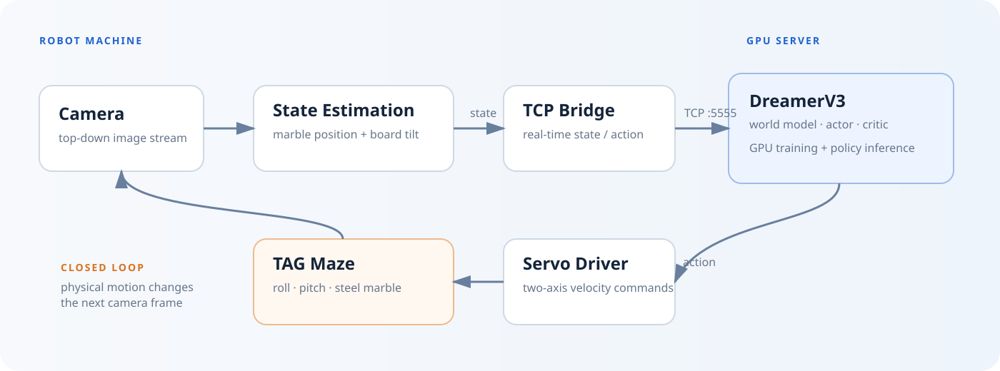
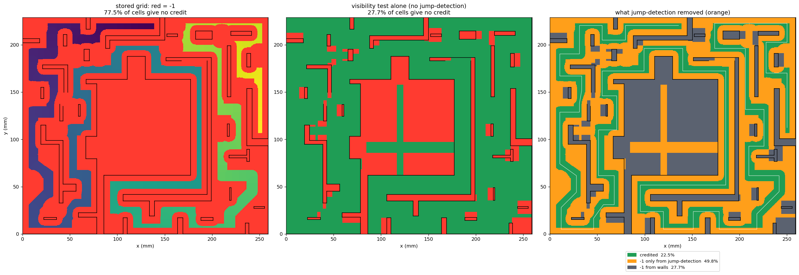
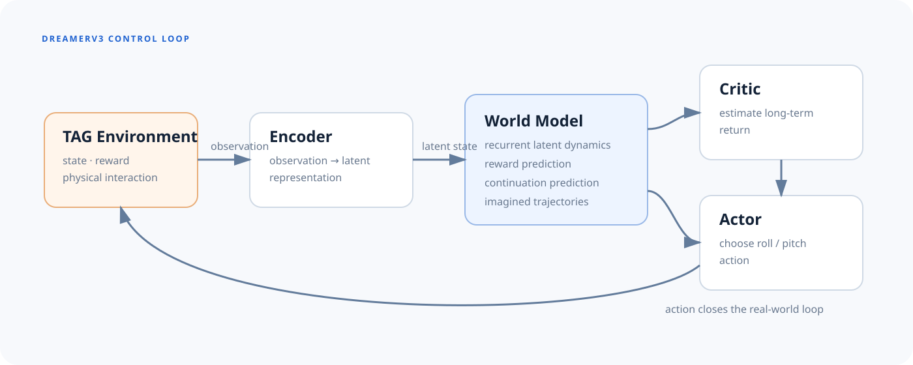

Observe
The camera captures the moving board and steel marble.
A Labyrinth Marble Robot for Learning-Based Dynamic Control
A camera-driven, two-axis tilting maze where a DreamerV3 agent learns to control a steel marble from real experience, with a digital twin in Isaac Sim and a disturbance platform for robustness experiments.
Suggested hero: synchronized side-by-side real and simulation rollouts from similar initial conditions.
TAG is a model-based reinforcement-learning robot that plays a labyrinth marble maze. A top-down camera estimates the marble and board state, two Hiwonder servos tilt the board, and a DreamerV3 agent trains on a GPU server while interacting with the physical system in real time.
The robot and learner are separated across two machines: the robot machine handles sensing, estimation, and servo I/O; the GPU server runs DreamerV3 and returns actions over TCP.

The camera captures the moving board and steel marble.
Perception estimates marble position and board tilt in real time.
DreamerV3 updates its latent world model, value function, and policy.
Continuous control commands drive the two board servos.
The marble must travel through a constrained maze while avoiding walls and holes. Small board-angle changes can produce large downstream trajectory changes, making TAG useful for studying long-horizon feedback control, learning efficiency, and robustness.

This page automatically uses docs/path_grid.png when installed inside the TAG repository.
The simulation reproduces the board, walls, holes, marble dynamics, and two-axis actuation so policies and experimental ideas can be tested quickly before real-hardware deployment.
Rather than learning only from direct trial-and-error updates, DreamerV3 learns compact latent dynamics from experience and trains its actor and critic on imagined trajectories inside that learned model.

Estimated marble state and board state enter the environment interface.
A recurrent latent dynamics model predicts future representations, rewards, and continuation.
Imagined rollouts are used to improve actions and value estimates efficiently.
Use this section as the visual center of the site. Replace the placeholders with short, looping MP4 clips that start immediately and make the behavior easy to compare.
Baseline policy on the physical testbed with the disturbance mechanism off.
Evaluate robustness when pendulum vibration changes the board dynamics.
Show performance before and after additional learning under the disturbed dynamics.
The cards below are intentionally data-ready placeholders. Replace the sample values with measured results when your experiments are finalized.
/tag_camera/imagecamera → estimator/tag_state_estimation/estimateestimated stateTCP :5555robot ↔ GPU server/tag_hiwonder/cmdcontroller → servosWhen the manuscript is public, replace this placeholder with the final BibTeX entry and link the Paper button at the top of the page.
@article{tag2026,
title = {TAG: A Labyrinth Marble Robot for Learning-Based Dynamic Control},
author = {Truong, Trung Bao and Nguyen, Dat and Doan, Thinh and ...},
journal = {Manuscript in preparation},
year = {2026}
}